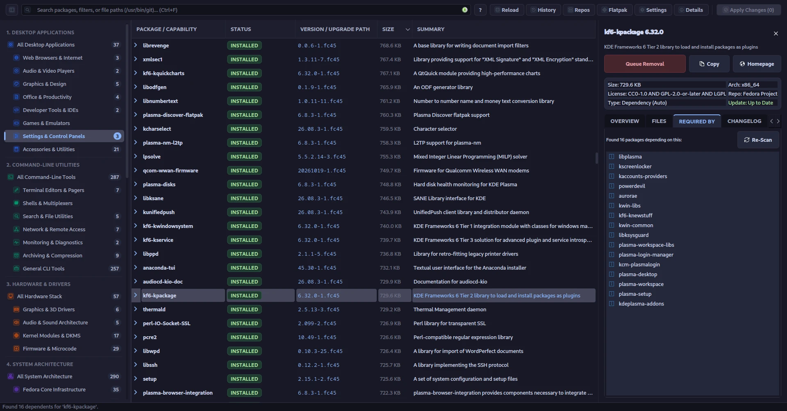

See what a package change will actually do
A graphical package manager for Fedora Linux, with a dependency tree explorer. Browse what is installed, follow a dependency to the library it needs, and review the resolved transaction plan before anything is applied.

curl. The window follows your desktop's dark or light
theme.
What it does
Fedora packages no longer carry a category tag, and no single source of metadata covers everything on a desktop. Dendro works from what the packages actually contain, and says so when the evidence is missing rather than guessing.
Dependency tree
Expand a package into its requirement graph, including virtual
capabilities such as libc.so.6()(64bit). Double-click a
node to jump to that package.
Reverse dependencies
See which packages depend on a library before removing it. This is the
question dnf remove makes you ask afterwards.
Plan review
Every transaction is resolved by the DNF5 daemon and shown as a plan — with download and disk impact — before you authorise it. What you confirm is the plan you were shown.
File and metadata inspection
Browse every installed file, the package's scripts and changelog, and
its rpm -V verification result without leaving the window.
Classification from evidence
Categories come from installed file paths, exported ELF objects and language ecosystems. When the evidence is insufficient, the package is marked unclassified instead of being filed under a guess.
Fedora Atomic aware
On Silverblue, Kinoite and other immutable hosts, Dendro reads
deployment and layered-package state and deliberately refuses to change
a read-only /usr.
Install
The COPR repository is the recommended route: it updates through
dnf and installs the Polkit helper that repository-file
management needs.
Fedora repository Recommended
Install once; receive updates with your normal system updates.
$ sudo dnf copr enable xyasharx/dendro -y $ sudo dnf install dendro -y
AppImage
No installation. Runs against your host's DNF5 daemon; the repository-file helper is not included.
$ chmod +x Dendro-x86_64.AppImage $ ./Dendro-x86_64.AppImage
- Requirements
-
Fedora 43 or newer,
dnf5daemon-server5.2.7 or newer, and an active Polkit authentication agent. Inspection also needs the RPM Python bindings, which the package depends on. - Privileges
-
Dendro is an unprivileged D-Bus client. Package changes go through Fedora's
own DNF5 daemon on
org.rpm.dnf.v0, so the daemon keeps RPM locking and asks Polkit for authorisation. Dendro never builds a privilegeddnfcommand line and never asks for your password itself. - Flatpak
- Flatpak apps and runtimes are managed in a separate window and are never mixed into the RPM tree. There is no Flathub build: inside a sandbox the host RPM database and system daemon are out of reach, so a Flatpak edition could not do the job this one is for.
About Dendro
Dendro exists because the command line is precise but hard to read, and an app store is easy to read but only covers applications. It is for the space between: seeing what is installed, and what depends on what.
It explains its own decisions
When Dendro classifies a package, it can show the evidence it used. When it has none, it says so. A category you cannot interrogate is a category you cannot trust.
It does not own the transaction
The plan is resolved by the DNF5 daemon and executed by it. Dendro shows it and asks; it does not reimplement package management.
It stops where the host says stop
Read-only /usr, an immutable deployment, or an unbooted
container each disable what cannot work, with an explanation, instead of
failing halfway through.
It is not a shop window
No account and no telemetry. It contacts the repositories you have
enabled, and fetches a .repo file only when you ask it to.
The interface follows your system theme and your language.